用法：A型题点选项即判；X型题先多选、再点【判卷】；答完自动展开解析。刷完本课再过一遍底部【本课速记卡】，效果最好。
一、适应：萎缩10 题
A型·单选Q1P1 · 萎缩
萎缩的本质是
答案与解析
答案：B
萎缩：发育正常的实质细胞、组织、器官体积变小，伴功能下降；也可指实质细胞数量减少。前提是『发育正常』的细胞。
📖 讲义定位：P1 · 萎缩
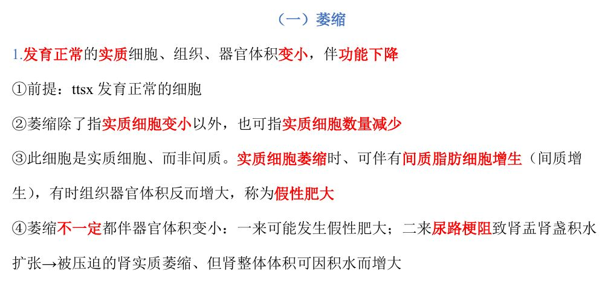
📷 讲义原图 · P1 · 萎缩
A型·单选Q2P2 · 萎缩分类
营养不良性萎缩时，最早出现萎缩的组织是
答案与解析
答案：A
营养不良性萎缩：首先发生在脂肪（『要瘦先瘦胸』），后期发生在永久性细胞（神经元、骨骼肌、心肌）。
📖 讲义定位：P2 · 萎缩分类
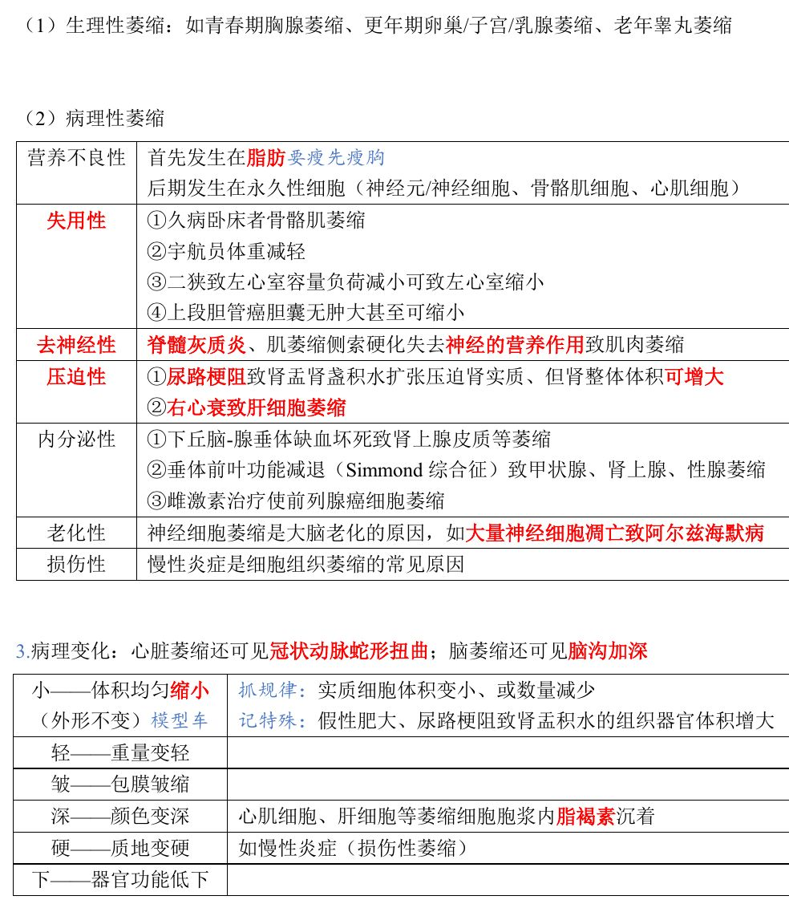
📷 讲义原图 · P2 · 萎缩分类
A型·单选Q3P2 · 萎缩分类
左下肢股骨干骨折固定 6 周后，左下肢明显比右下肢细，该萎缩类型属于
答案与解析
答案：C
失用性萎缩：久病卧床骨骼肌萎缩、宇航员体重减轻、二狭致左心室缩小、上段胆管癌致胆囊不肿大等。
📖 讲义定位：P2 · 萎缩分类
A型·单选Q4P2 · 萎缩分类
尿路梗阻致肾盂肾盏积水扩张、肾实质萎缩，该萎缩类型属于
答案与解析
答案：D
压迫性萎缩（尿路梗阻时被压迫的肾实质萎缩，但肾整体体积可因积水增大）；右心衰致肝细胞萎缩也属压迫性。
📖 讲义定位：P2 · 萎缩分类
A型·单选Q5P2 · 萎缩分类
脊髓灰质炎和肌萎缩侧索硬化所致肌肉萎缩属于
答案与解析
答案：D
去神经性萎缩：失去神经的营养作用→肌肉萎缩。
📖 讲义定位：P2 · 萎缩分类
A型·单选Q6P2 · 萎缩分类
垂体前叶功能减退（Simmond 综合征）致甲状腺、肾上腺、性腺萎缩，属于
答案与解析
答案：B
内分泌性萎缩：下丘脑-腺垂体缺血坏死致肾上腺皮质萎缩、Simmond 综合征、雌激素治疗使前列腺癌细胞萎缩等。
📖 讲义定位：P2 · 萎缩分类
A型·单选Q7P1 · 萎缩
实质细胞萎缩伴间质脂肪细胞增生、器官体积反而增大，称为
答案与解析
答案：A
假性肥大：实质细胞萎缩＋间质（脂肪）增生，器官体积可增大——注意它不属于肥大。
📖 讲义定位：P1 · 萎缩
A型·单选Q8P2 · 萎缩病理变化
肉眼判断心脏萎缩的最主要依据是
答案与解析
答案：C
心脏萎缩：外形不变但冠状动脉蛇形扭曲；脑萎缩可见脑沟加深。萎缩五字诀『小轻皱深硬下』。
📖 讲义定位：P2 · 萎缩病理变化
A型·单选Q9P3 · 脂褐素
关于脂褐素，下列叙述正确的是
答案与解析
答案：A
脂褐素（『我吃我自己』）：自噬溶酶体内未被彻底消化的细胞器碎片残体；老年/营养耗竭时萎缩的心肌、肝细胞核周大量（消耗性色素），是细胞受过自由基脂质过氧化损伤的标志。
📖 讲义定位：P3 · 脂褐素
X型·多选Q10P2 · 萎缩病理变化
心肌褐色萎缩的病变有
答案与解析
答案：AD
B 错：虎斑心是心肌脂肪变性；C 错：心底部大血管不发生萎缩性改变。
📖 讲义定位：P2 · 萎缩病理变化
二、适应：肥大·增生·化生10 题
A型·单选Q11P3 · 肥大
肥大的本质是
答案与解析
答案：D
肥大：实质细胞、组织、器官体积变大伴功能增强（也指实质细胞数量增加）；注意假性肥大不属于肥大（功能下降）。
📖 讲义定位：P3 · 肥大
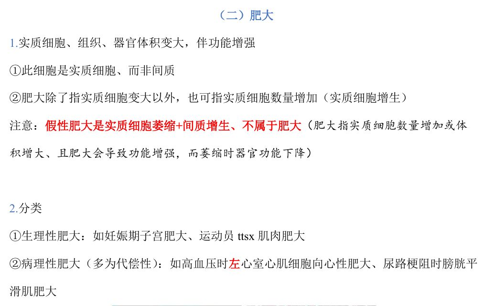
📷 讲义原图 · P3 · 肥大
A型·单选Q12P3 · 肥大
下列属于生理性肥大的是
答案与解析
答案：B
生理性肥大：妊娠期子宫、运动员肌肉；病理性肥大（多为代偿性）：高血压左心室向心性肥大、尿路梗阻膀胱平滑肌肥大。
📖 讲义定位：P3 · 肥大
A型·单选Q13P4 · 增生
对于没有分裂能力的细胞（神经元、骨骼肌、心肌）所在的组织，其肥大
答案与解析
答案：C
无分裂能力细胞所在组织：肥大仅来自实质细胞体积变大（肥大），不会有实质细胞增生；间质增生致假性肥大。
📖 讲义定位：P4 · 增生
A型·单选Q14P4 · 增生
病理性增生最常见的原因是
答案与解析
答案：C
病理性增生最常见＝内分泌性增生（雄激素过多→前列腺增生肥大；碘缺乏→单纯性甲状腺肿）；另有炎症和组织损伤的修复性增生。生理性增生不超过原有限度。
📖 讲义定位：P4 · 增生
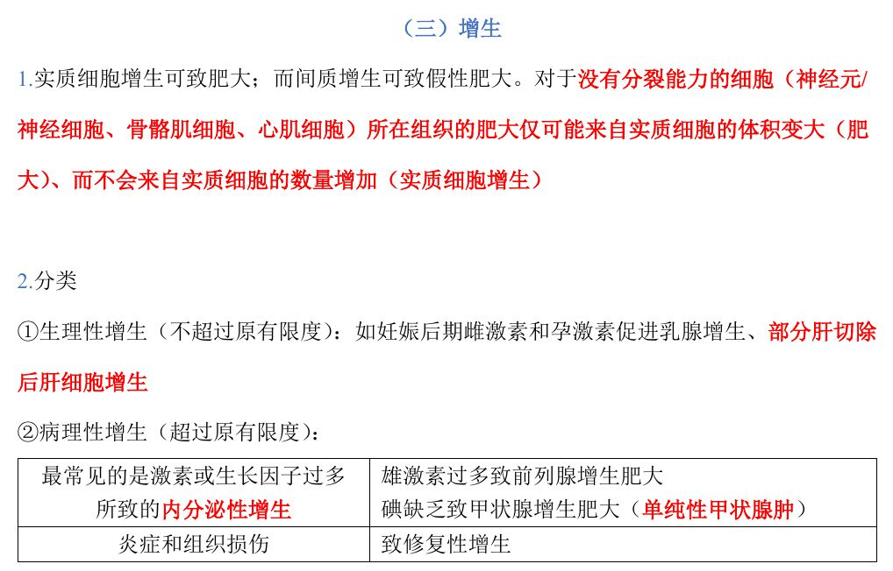
📷 讲义原图 · P4 · 增生
A型·单选Q15P4 · 化生
化生是指
答案与解析
答案：A
化生定义；通常只出现在分裂增殖能力较活跃的细胞类型中，通过正常组织的干细胞等转分化实现；多发生在同源细胞之间（上皮之间、间叶之间）——神经组织不能化生。
📖 讲义定位：P4 · 化生
A型·单选Q16P4 · 化生
下列组织中，不会发生化生的是
答案与解析
答案：D
化生多在同源细胞之间（上皮间、间叶间）；神经组织不能化生（神经元不可再生、神经纤维和胶质细胞可再生）。
📖 讲义定位：P4 · 化生
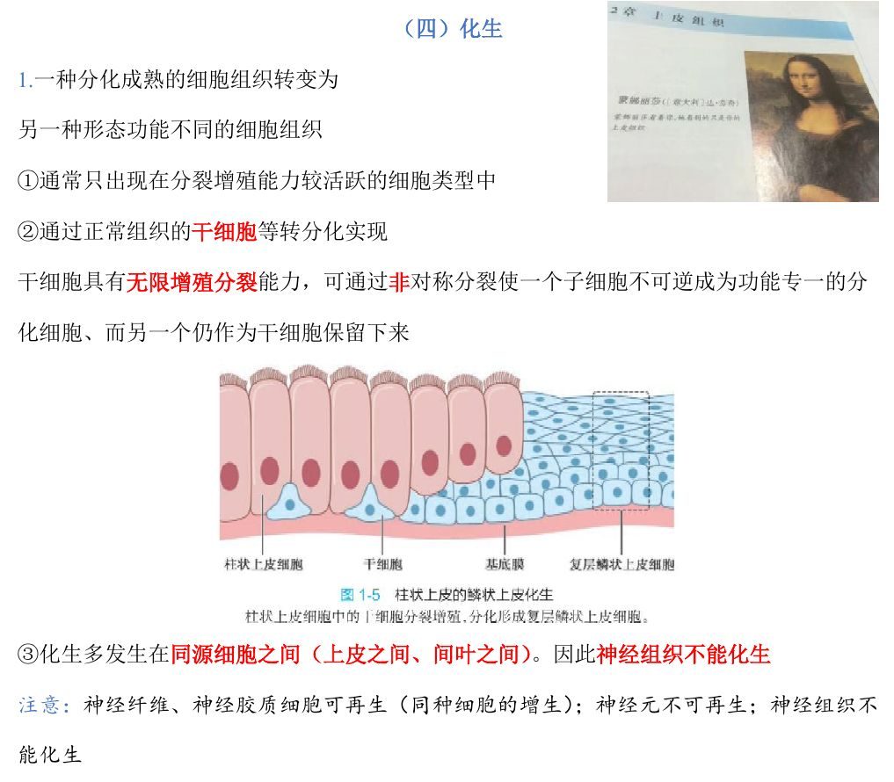
📷 讲义原图 · P4 · 化生
A型·单选Q17P5 · 化生
下列不属于化生的是
答案与解析
答案：B
舌根部甲状腺组织＝迷离瘤（『迷路了』），不是化生；类上皮细胞（肉芽肿性炎）、血栓机化出现的细胞也不是化生。
📖 讲义定位：P5 · 化生
A型·单选Q18P5 · 化生
损伤性骨化（骨化性肌炎）的本质是
答案与解析
答案：A
间叶之间化生（多不可逆）：损伤性骨化/骨化性肌炎——肌肉中出现骨组织，多见于肘关节附近的肱骨髁上骨折。
📖 讲义定位：P5 · 化生
A型·单选Q19P5 · 化生
最常发生鳞状上皮化生并进而与鳞癌相关的部位是
答案与解析
答案：D
鳞化最常见：吸烟、慢支炎、支扩致支气管鳞化→肺鳞癌；另有结石或 VitA 缺乏致肾盂膀胱肝胆胰鳞化及鳞癌、子宫内膜鳞癌等。
📖 讲义定位：P5 · 化生
X型·多选Q20P5 · 化生
属于腺上皮化生的有
答案与解析
答案：ABC
D 属于鳞状上皮化生（上皮间化生的鳞化），不是腺上皮化生。
📖 讲义定位：P5 · 化生
三、变性：水样·脂肪·玻璃样8 题
A型·单选Q21P5 · 水样变性
细胞水肿（水样变性）时，细胞器损伤首先发生于
答案与解析
答案：B
细胞水肿首先发生在线粒体（能量工厂），其次内质网；线粒体损伤多是细胞损伤的早期标志。
📖 讲义定位：P5 · 水样变性
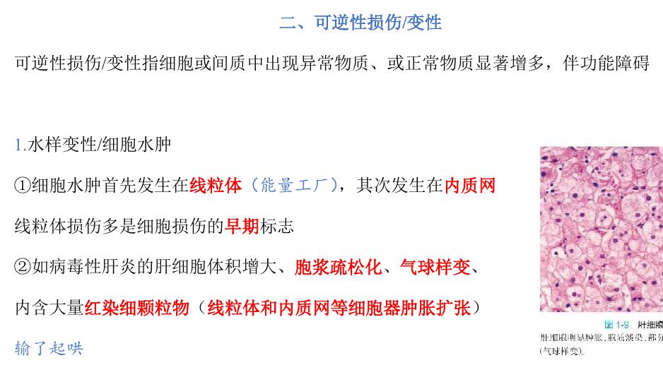
📷 讲义原图 · P5 · 水样变性
A型·单选Q22P5 · 水样变性
病毒性肝炎时肝细胞气球样变的本质是
答案与解析
答案：C
肝细胞体积增大、胞浆疏松化、气球样变、内含大量红染细颗粒物（细胞器肿胀扩张）＝水样变性。
📖 讲义定位：P5 · 水样变性
A型·单选Q23P6 · 脂肪变性
慢性肝淤血（槟榔肝）时，肝细胞脂肪变性首先发生于
答案与解析
答案：A
肝淤血时脂肪变性首先发生在小叶中央（但脂肪变性集中在小叶周边）；VS 磷中毒时脂肪变性首先发生在小叶周边。槟榔肝＝中央淤血暗红＋周边脂肪变黄。
📖 讲义定位：P6 · 脂肪变性
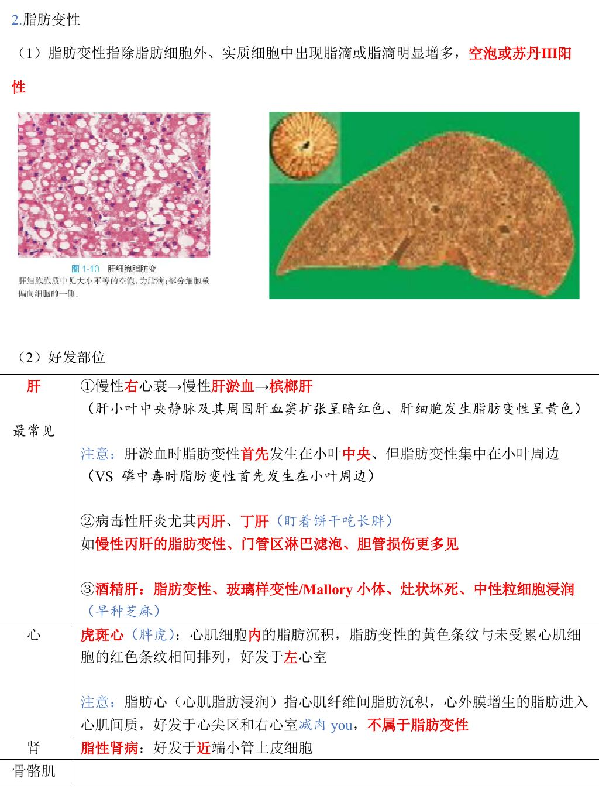
📷 讲义原图 · P6 · 脂肪变性
A型·单选Q24P6 · 脂肪变性
关于虎斑心，正确的是
答案与解析
答案：B
虎斑心：心肌细胞内脂肪沉积，黄色条纹与红色相间，好发左心室。注意：脂肪心（心肌脂肪浸润）是心外膜增生的脂肪进入心肌间质（心尖和右心室），不属于脂肪变性。
📖 讲义定位：P6 · 脂肪变性
A型·单选Q25P6 · 脂肪变性
脂性肾病主要累及
答案与解析
答案：C
脂性肾病：好发于近端小管上皮细胞（脂肪变性好发部位：肝＞心＞肾＞骨骼肌）。
📖 讲义定位：P6 · 脂肪变性
A型·单选Q26P6–7 · 玻璃样变性
细小动脉壁发生玻璃样变性（血浆蛋白沉积）常见于
答案与解析
答案：D
血管壁玻璃样变（血浆蛋白沉积）：缓进型高血压、糖尿病的细小动脉壁（细小动脉硬化）。纤维结缔组织玻璃样变：机化、瘢痕、AS 纤维斑块、萎缩子宫乳腺间质。
📖 讲义定位：P6–7 · 玻璃样变性
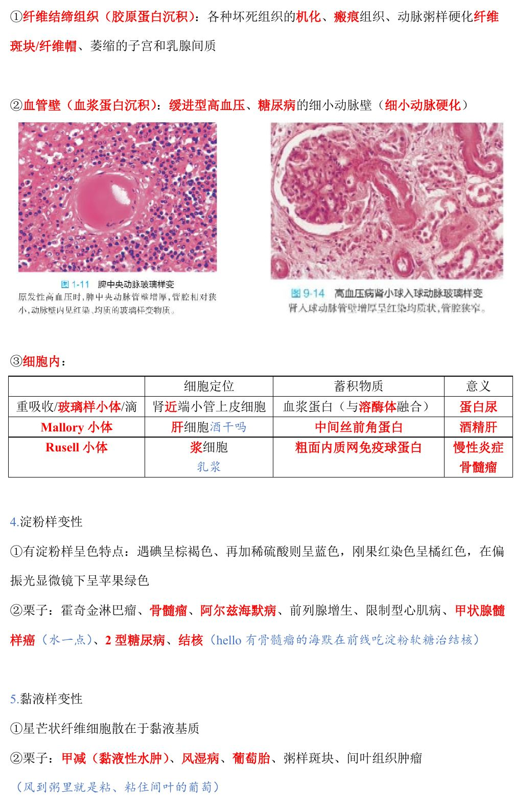
📷 讲义原图 · P6–7 · 玻璃样变性
X型·多选Q27P7 · 玻璃样变性
属于细胞内玻璃样变性的有
答案与解析
答案：BCD
A 不属于：讲义所列细胞内玻璃样变为重吸收滴（肾近曲小管，蛋白尿）、Mallory 小体（肝细胞，酒精肝）、Russell 小体（浆细胞，慢性炎症/骨髓瘤）。
📖 讲义定位：P7 · 玻璃样变性
A型·单选Q28P7 · 玻璃样变性
Mallory 小体的组成成分是
答案与解析
答案：C
Mallory 小体＝肝细胞胞质内中间丝前角蛋白蓄积（酒精肝）；Russell 小体＝浆细胞内粗面内质网的免疫球蛋白。
📖 讲义定位：P7 · 玻璃样变性
四、变性：淀粉样变·黏液样变·色素·钙化8 题
A型·单选Q29P7 · 淀粉样变性
淀粉样变性的特殊染色特点是
答案与解析
答案：D
淀粉样呈色：遇碘呈棕褐色、再加稀硫酸呈蓝色；刚果红染色橘红色；偏振光显微镜下苹果绿色。
📖 讲义定位：P7 · 淀粉样变性
X型·多选Q30P7 · 淀粉样变性
下列可出现淀粉样变性的有
答案与解析
答案：ABD
C 错。淀粉样变栗子：霍奇金淋巴瘤、骨髓瘤、阿尔茨海默病、前列腺增生、限制型心肌病、甲状腺髓样癌、2 型糖尿病、结核。
📖 讲义定位：P7 · 淀粉样变性
A型·单选Q31P8 · 黏液样变性
甲状腺功能低下时的黏液性水肿，其病变本质是
答案与解析
答案：A
黏液样变：星芒状纤维细胞散在于黏液基质；栗子：甲减（黏液性水肿）、风湿病、葡萄胎、粥样斑块、间叶组织肿瘤。
📖 讲义定位：P8 · 黏液样变性
A型·单选Q32P8 · 色素沉着
在巨噬细胞内形成的色素是
答案与解析
答案：B
含铁血黄素：巨噬细胞溶酶体分解血红蛋白形成（淤血、出血、溶血）；正常见于肝、脾、淋巴结、骨髓。
📖 讲义定位：P8 · 色素沉着
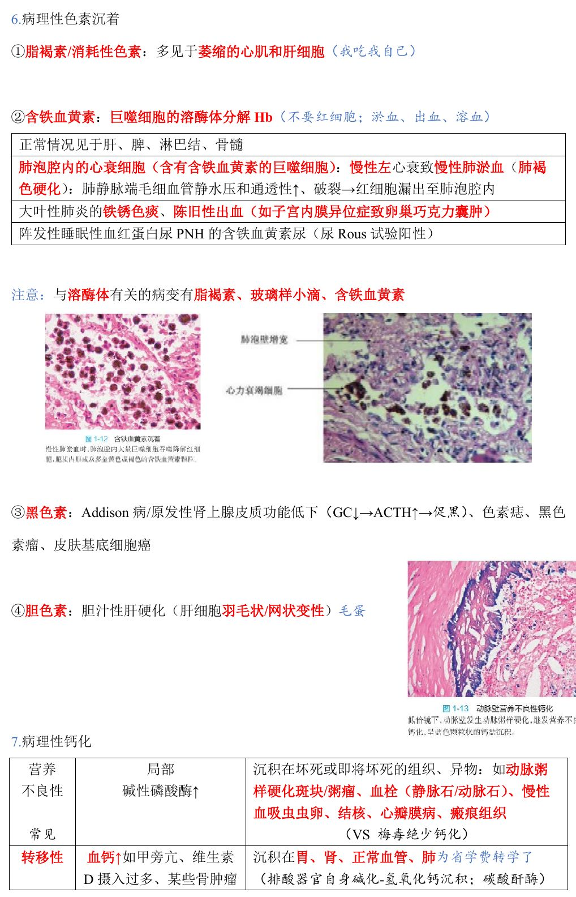
📷 讲义原图 · P8 · 色素沉着
A型·单选Q33P8 · 色素沉着
慢性左心衰致肺褐色硬化，肺泡腔内出现的『心衰细胞』是
答案与解析
答案：C
心衰细胞＝含含铁血黄素的巨噬细胞；机制：慢性左心衰→慢性肺淤血→毛细血管静水压和通透性↑、破裂→红细胞漏出至肺泡腔→巨噬细胞吞噬分解。
📖 讲义定位：P8 · 色素沉着
A型·单选Q34P8 · 色素沉着
Addison 病（原发性肾上腺皮质功能低下）皮肤色素沉着加重的机制是
答案与解析
答案：A
黑色素沉着：Addison 病/原发性肾上腺皮质功能低下（GC↓→ACTH↑→促黑）、色素痣、黑色素瘤、基底细胞癌。
📖 讲义定位：P8 · 色素沉着
X型·多选Q35P8 · 注意
与溶酶体有关的病变有
答案与解析
答案：ABD
C 错：黑色素由黑素细胞合成、经酪氨酸酶催化，与溶酶体无关。
📖 讲义定位：P8 · 注意
A型·单选Q36P8 · 病理性钙化
转移性钙化常见于（血钙升高时沉积部位）
答案与解析
答案：D
转移性钙化：血钙↑（甲旁亢、VitD 摄入过多、骨肿瘤）→沉积于胃、肾、正常血管、肺（排酸器官自身碱化）；B/A/C 属营养不良性钙化（局部碱性磷酸酶↑）。
📖 讲义定位：P8 · 病理性钙化
五、坏死：类型与好发部位10 题
A型·单选Q37P9 · 坏死类型
凝固性坏死的形态学特点是
答案与解析
答案：B
凝固性坏死：与周围分界清楚、原有组织轮廓保留；好发心、肾、脾、肝、胰。（梅毒肉芽肿常伴凝固性坏死、镜下可见原有血管壁轮廓。）
📖 讲义定位：P9 · 坏死类型
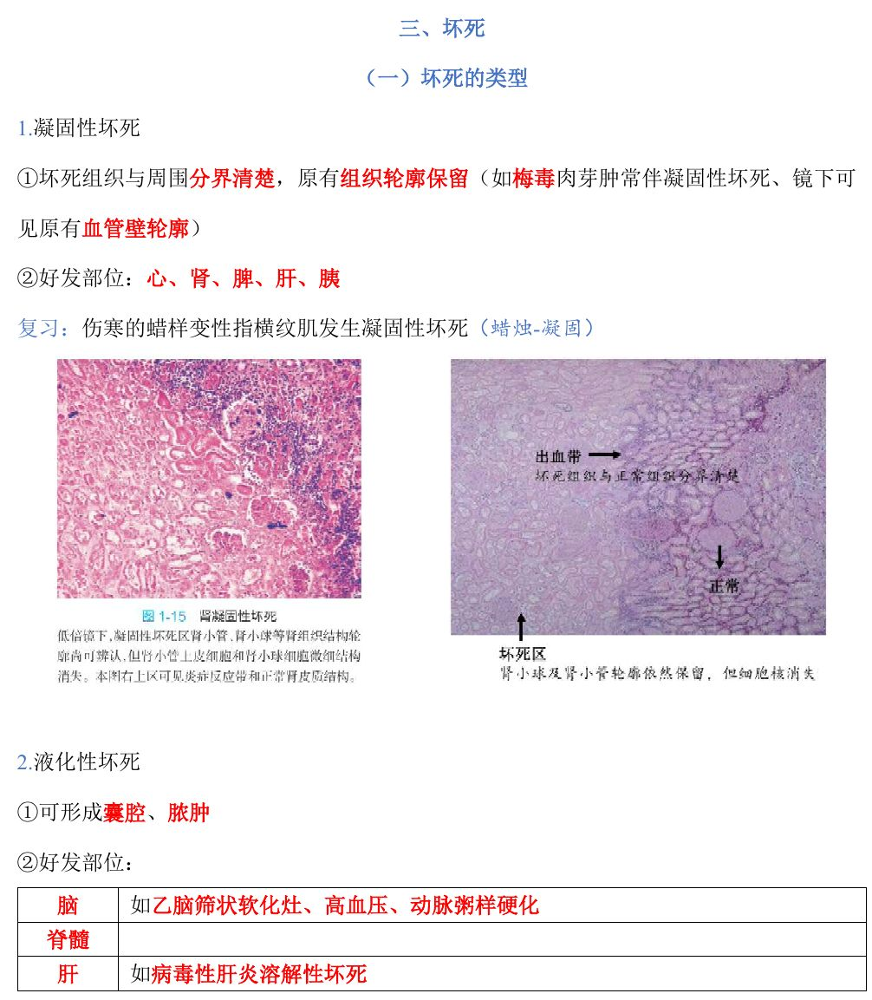
📷 讲义原图 · P9 · 坏死类型
A型·单选Q38P9 · 坏死类型
镜下坏死组织结构的轮廓消失，呈现一片嗜酸性颗粒状物，其坏死类型是
答案与解析
答案：A
干酪样坏死（彻底的凝固性坏死）：坏死灶含脂质较多，呈干燥、淡黄、细腻、质实、无结构的嗜酸性红染颗粒状物质；多见于结核。
📖 讲义定位：P9 · 坏死类型
A型·单选Q39P9 · 坏死类型
急性重型胰腺炎时胰腺周围脂肪坏死属于
答案与解析
答案：B
脂肪坏死（特殊的液化性坏死）：①酶解性——急性重型胰腺炎（钙皂；注意胰腺本身为凝固性坏死）②外伤性——女性乳房创伤。
📖 讲义定位：P9 · 坏死类型
X型·多选Q40P9 · 坏死类型
纤维素样坏死常见于
答案与解析
答案：ABC
D 错：良性高血压致细动脉玻璃样变。纤维素样坏死（结缔组织、小血管壁胶原纤维坏死）栗子：急进型高血压、风湿、类风湿、新月体性肾炎、结节性多动脉炎、胃溃疡、SLE、超急性排斥、1 型糖尿病等。
📖 讲义定位：P9 · 坏死类型
A型·单选Q41P9 · 坏死类型
下列疾病中，不会出现纤维素样坏死的是
答案与解析
答案：C
注意：慢性肺心病（肺动脉高压）不会出现纤维素样坏死。
📖 讲义定位：P9 · 坏死类型
A型·单选Q42P9 · 坏疽
坏疽发生的前提条件是
答案与解析
答案：D
坏疽：大片组织坏死后继发腐败菌感染；发生在与外界相通的器官（心、肾、脾、肝、胰、脑、脊髓等不发生坏疽）。
📖 讲义定位：P9 · 坏疽
A型·单选Q43P9 · 坏疽
湿性坏疽的好发部位是
答案与解析
答案：A
湿性坏疽：动静脉均闭塞；湿、软、大、绿、臭、分界不清、病情重；好发阑尾、子宫、肺、肠、胆囊（『男子非常胆大』）。
📖 讲义定位：P9 · 坏疽
A型·单选Q44P9 · 坏疽
干性坏疽的特点是
答案与解析
答案：D
干性坏疽：动脉闭塞、静脉正常→干燥、皱缩、黑褐色、分界清楚、病情较轻、好发肢体末端；气性坏疽＝湿性坏疽＋厌氧菌（气泡、捻发音）。
📖 讲义定位：P9 · 坏疽
A型·单选Q45P9 · 坏死类型
金黄色葡萄球菌感染性脓肿的坏死类型是
答案与解析
答案：B
化脓性炎（脓肿）为液化性坏死（中性粒细胞释放水解酶）。
📖 讲义定位：P9 · 坏死类型
A型·单选Q46P10 · 小结
肾贫血性梗死和心肌梗死的坏死类型是；阿米巴肝脓肿的坏死类型是
答案与解析
答案：C
心、肾、脾、肝、胰：凝固性坏死；脑、脊髓、肝、胰、乳房：液化性坏死（阿米巴肝脓肿为液化性坏死）。
📖 讲义定位：P10 · 小结
六、坏死的结局与坏死 VS 凋亡6 题
A型·单选Q47P11 · 坏死结局
阑尾切除术后，切口处有肠内容物流出，该病变是
答案与解析
答案：A
瘘管：两端相通的通道（『吸管』），如阑尾术后切口肠内容物流出；窦道：一端开口的盲管，如腰椎结核脓液从背部流出。
📖 讲义定位：P11 · 坏死结局
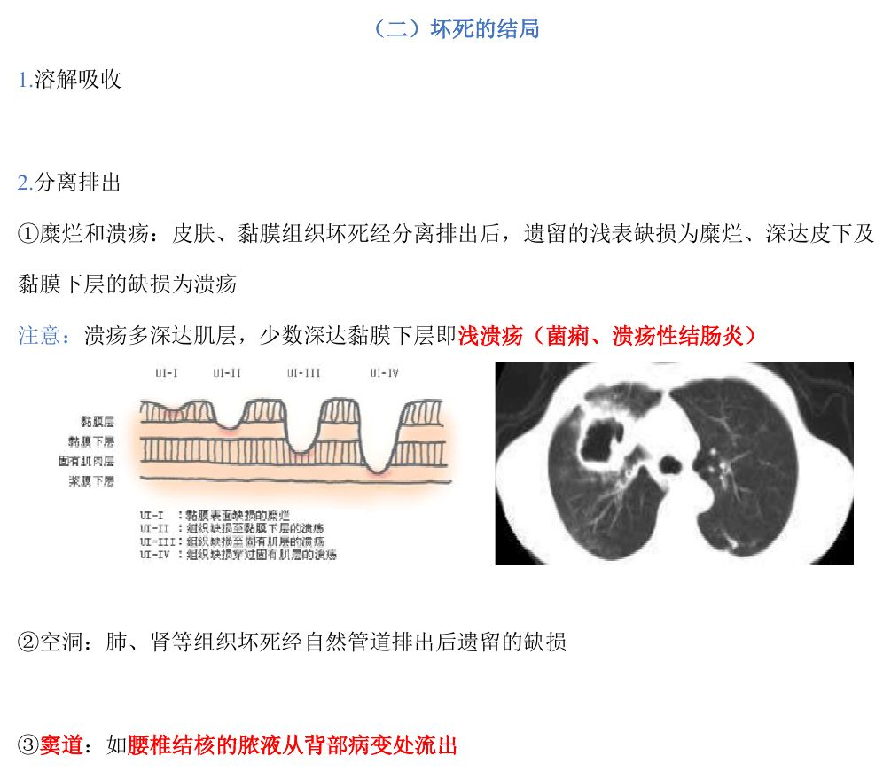
📷 讲义原图 · P11 · 坏死结局
A型·单选Q48P11 · 坏死结局
腰椎结核的脓液从背部病变处流出，形成的病变是
答案与解析
答案：C
窦道：深部组织坏死经排出途径形成的一端开口盲管。
📖 讲义定位：P11 · 坏死结局
A型·单选Q49P11 · 坏死结局
糜烂与溃疡的主要区别是
答案与解析
答案：D
糜烂＝浅表缺损；溃疡＝深达皮下及黏膜下层的缺损。注意：溃疡多深达肌层，少数深达黏膜下层即浅溃疡（菌痢、溃疡性结肠炎）。
📖 讲义定位：P11 · 坏死结局
A型·单选Q50P12 · 坏死 VS 凋亡
凋亡细胞的形态特征是
答案与解析
答案：B
凋亡：细胞固缩、细胞膜完整（形态学与坏死的明显区别）、发泡成芽→凋亡小体（含核碎片和细胞器成分）；无炎症反应、无细胞自溶。
📖 讲义定位：P12 · 坏死 VS 凋亡
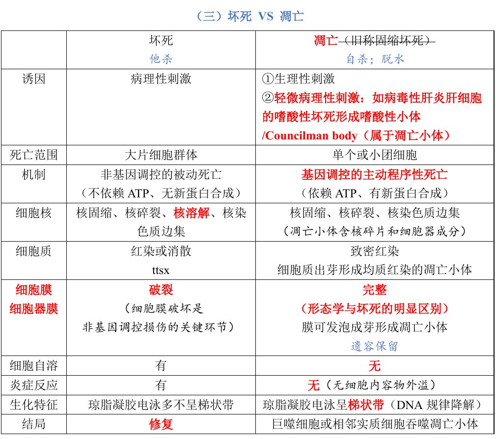
📷 讲义原图 · P12 · 坏死 VS 凋亡
A型·单选Q51P12 · 坏死 VS 凋亡
凋亡的生化特征是
答案与解析
答案：B
凋亡：基因调控的主动程序性死亡（依赖 ATP、有新蛋白合成），DNA 规律降解→电泳梯状带；坏死：被动死亡、电泳多不呈梯状带。
📖 讲义定位：P12 · 坏死 VS 凋亡
X型·多选Q52P12 · 坏死 VS 凋亡
关于坏死与凋亡的区别，下列叙述正确的有
答案与解析
答案：BCD
A 错：凋亡为单个或小团细胞；大片细胞群体死亡是坏死。此外嗜酸性小体（Councilman body）属于凋亡小体。
📖 讲义定位：P12 · 坏死 VS 凋亡
本课速记卡
适应：萎·肥·增·化
- 萎缩：发育正常的实质细胞变小（或减少）伴功能下降；假性肥大＝实质萎缩＋间质增生（不属肥大）
- 病理性萎缩：营养不良性（先脂肪、后永久细胞）、失用性、去神经性、压迫性、内分泌性（Simmond）、老化性、损伤性（慢性炎症）
- 病理变化五字：小轻皱深硬下；心肌/肝细胞脂褐素（消耗性色素）；心脏萎缩→冠状动脉蛇形扭曲
- 肥大＝实质细胞变大伴功能增强（假性肥大除外）；无分裂细胞组织肥大只来自体积变大
- 增生：病理性最常见＝内分泌性（雄激素→前列腺、碘缺乏→甲状腺）
- 化生：成熟细胞→另一种形态功能不同细胞；经干细胞转分化；同源间（神经组织不能化生）；鳞化（支气管→肺鳞癌）、腺上皮化生（肠化、Barrett）、间叶化生（骨化性肌炎）；迷离瘤不是化生
变性速记
- 水样变：先线粒体（早期标志）；病毒性肝炎气球样变
- 脂肪变：肝（淤血→槟榔肝，中央先发生、周边集中；磷中毒周边先）、心（虎斑心，左心室）、肾（脂性肾病，近端小管）；脂肪心≠脂肪变性
- 玻璃样变：纤维结缔组织（胶原）、血管壁（血浆蛋白，缓进高/糖尿病）、细胞内（重吸收滴/Mallory 中间丝前角蛋白/Russell 免疫球蛋白）
- 淀粉样变：刚果红橘红、偏振光苹果绿；栗子：霍奇金、骨髓瘤、AD、前列腺增生、限制型心肌病、髓样癌、2 型糖尿病、结核
- 黏液样变：甲减、风湿、葡萄胎、粥样斑块、间叶肿瘤
- 色素：脂褐素（消耗性）、含铁血黄素（巨噬细胞；心衰细胞/肺褐色硬化）、黑色素（Addison）、胆色素；溶酶体相关＝脂褐素/玻璃样小滴/含铁血黄素
- 钙化：营养不良性（AS 斑块、血栓、虫卵、结核、瘢痕；梅毒绝少钙化）；转移性（血钙↑→胃肾肺血管）
坏死类型
- 凝固性坏死：界清、轮廓保留（心肾脾肝胰）；干酪样＝彻底凝固（结核）
- 液化性坏死：脑脊髓肝胰乳房；脂肪坏死（酶解性=重型胰腺炎/外伤性=乳房）
- 纤维素样坏死：急进型高血压、风湿、SLE、超急性排斥等（慢性肺心病不会）
- 坏疽：与外界相通器官；干性（肢端）/湿性（阑尾子宫肺肠胆囊）/气性（厌氧菌）
结局与凋亡
- 结局：溶解吸收、分离排出（糜烂/溃疡、空洞、窦道、瘘管）、机化包裹、钙化
- 凋亡：固缩、膜完整、发泡成芽、凋亡小体；基因调控（ATP＋新蛋白）；无炎症；电泳梯状带
- 坏死：被动、大片、膜破裂、自溶、有炎症、电泳非梯状
- 调节性细胞死亡：凋亡、坏死性凋亡、焦亡、铁死亡、自噬
📚 网站题库（导入）22 组 · 59 题
说明：本部分为外部题库导入（来源：「西综题库」网站 · 病理学），题干、选项与答案保留原样；标注「教师补充」的答案未经讲义逐项复核。做题方式：点字母选择（多选后点【判卷】；答案可点开「答案与出处」查看）。
适应、可逆性损伤与细胞死亡B型题
A 水样变性
B 萎缩
C 玻璃样/透明变性
D 增生
E 黏液样变性
F 老化
G 病理性钙化
H 凝固性坏死
I 凋亡
J 干酪样坏死
K 焦亡
L 纤维蛋白样坏死
M 自噬
N 脂肪变性
O 肥大
P 淀粉样变性
Q 化生
R 病理性色素沉着
S 液化性坏死
T 坏死性凋亡
U 脂肪坏死
V 铁死亡
W 坏疽
网站题W1第23讲 · 第1页
适应
答案与出处
答案：BDFOQ
📖 第23讲 · 第1页
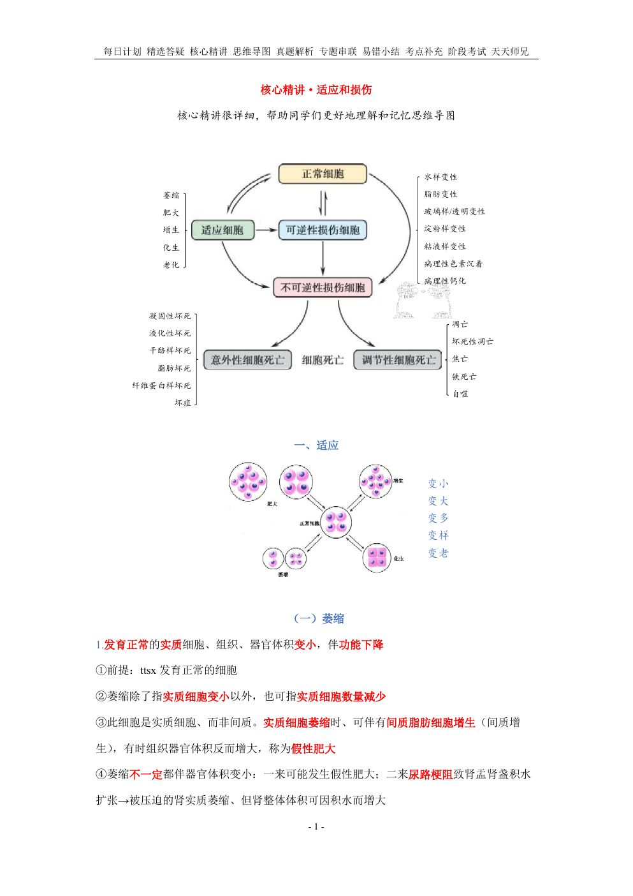
📷 讲义原图 · 第23讲 · 第1页
网站题W2第23讲 · 第1页
可逆性损伤
答案与出处
网站题W3第23讲 · 第13页
意外性细胞死亡
答案与出处
答案：HJLSUW
📖 第23讲 · 第13页
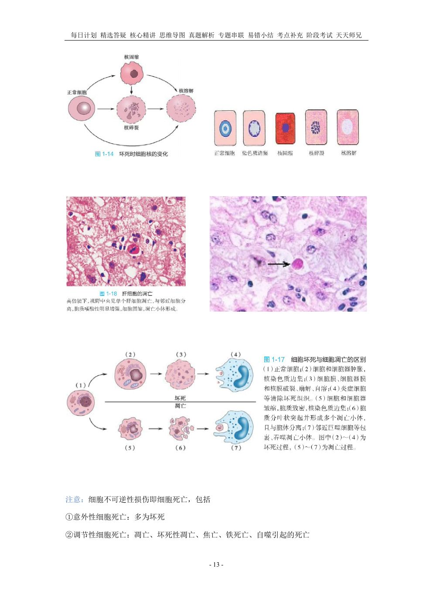
📷 讲义原图 · 第23讲 · 第13页
网站题W4第23讲 · 第13页
调节性细胞死亡
答案与出处
萎缩的分类与举例B型题
A 青春期胸腺萎缩
B 首先发生在脂肪，后期发生在永久性细胞（神经元/神经细胞、骨骼肌细胞、心肌细胞）
C 久病卧床者骨骼肌萎缩
D 更年期卵巢、子宫、乳腺萎缩
E 二尖瓣狭窄致左心室容量负荷减小，可致左心室缩小
F 尿路梗阻致肾盂肾盏积水扩张压迫肾实质，但肾整体体积可增大
G 宇航员体重减轻
H 脊髓灰质炎、肌萎缩侧索硬化
I 上段胆管癌时胆囊无肿大甚至可缩小
J 下丘脑腺垂体缺血坏死致肾上腺皮质等萎缩
K 慢性炎症是细胞组织萎缩的常见原因
L 垂体前叶功能减退（Simmonds综合征）致甲状腺、肾上腺、性腺萎缩
M 右心衰致肝细胞萎缩
N 雌激素治疗使前列腺癌细胞萎缩
O 神经细胞萎缩是大脑老化的原因，如大量神经细胞凋亡致阿尔茨海默病
P 老年睾丸萎缩
网站题W5第23讲 · 第2页
生理性萎缩
答案与出处
答案：ADP
📖 第23讲 · 第2页
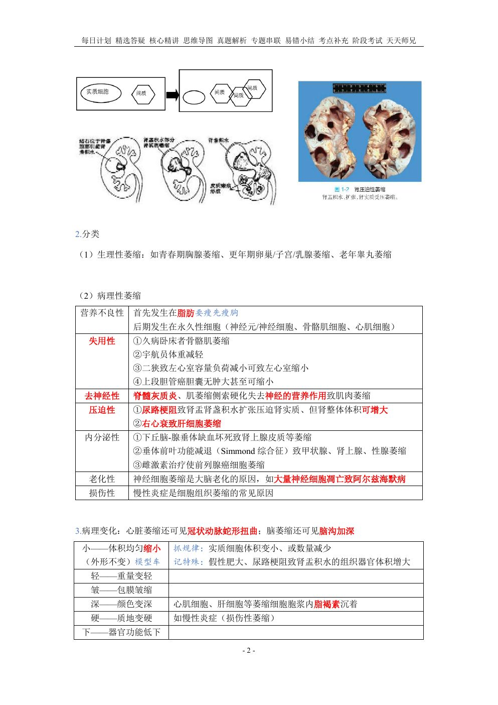
📷 讲义原图 · 第23讲 · 第2页
网站题W6第23讲 · 第2页
病理性萎缩
答案与出处
答案：BCEFGHIJKLMNO
📖 第23讲 · 第2页
网站题W7第23讲 · 第2页
营养不良性萎缩
答案与出处
网站题W8第23讲 · 第2页
失用性萎缩
答案与出处
网站题W9第23讲 · 第2页
去神经性萎缩
答案与出处
网站题W10第23讲 · 第2页
压迫性萎缩
答案与出处
网站题W11第23讲 · 第2页
内分泌性萎缩
答案与出处
网站题W12第23讲 · 第2页
老化性萎缩
答案与出处
网站题W13第23讲 · 第2页
损伤性萎缩
答案与出处
生理性与病理性肥大B型题
A 妊娠期子宫肥大
B 高血压时左心室心肌细胞向心性肥大
C 运动员肌肉肥大
D 尿路梗阻时膀胱平滑肌肥大
网站题W14第23讲 · 第3页
生理性肥大
答案与出处
答案：AC
📖 第23讲 · 第3页
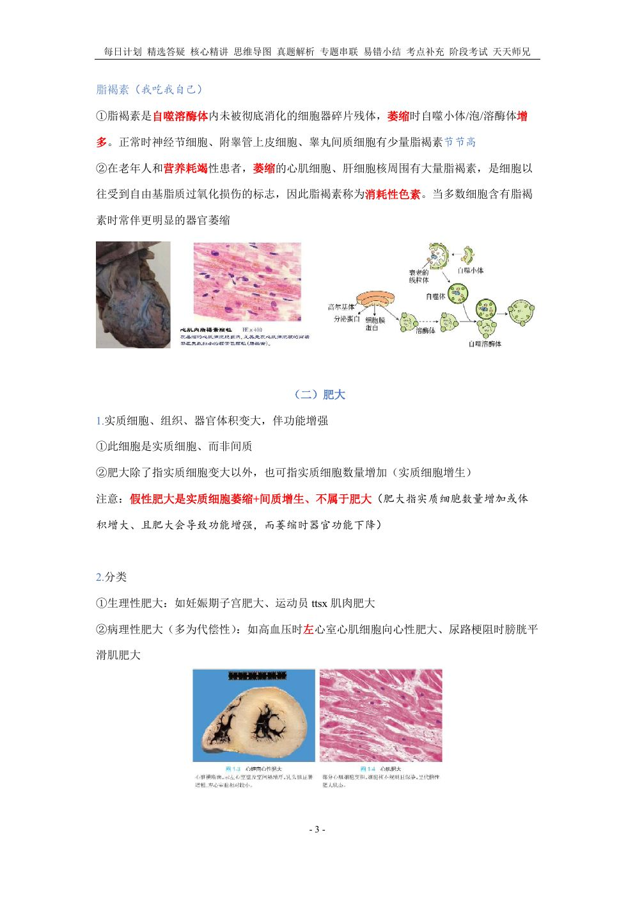
📷 讲义原图 · 第23讲 · 第3页
网站题W15第23讲 · 第3页
病理性肥大
答案与出处
生理性与病理性增生B型题
A 妊娠后期雌激素和孕激素促进乳腺增生
B 碘缺乏致甲状腺增生肥大（单纯性甲状腺肿）
C 部分肝切除后肝细胞增生
D 雄激素过多致前列腺增生肥大
E 炎症和组织损伤致修复性增生
网站题W16第23讲 · 第4页
生理性增生
答案与出处
答案：AC
📖 第23讲 · 第4页
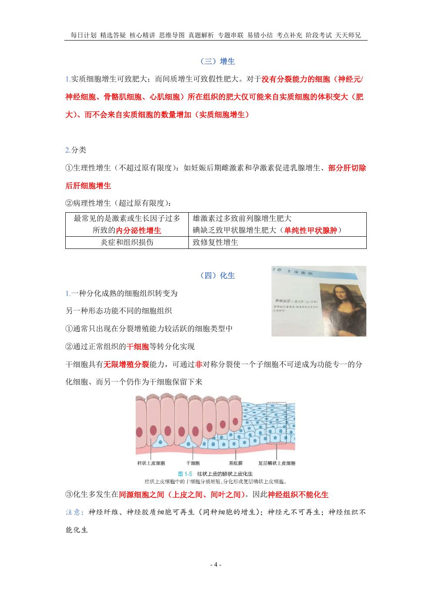
📷 讲义原图 · 第23讲 · 第4页
网站题W17第23讲 · 第4页
病理性增生
答案与出处
营养不良性钙化与转移性钙化B型题
A 局部碱性磷酸酶升高
B 沉积在坏死或即将坏死的组织、异物
C 动脉粥样硬化斑块/粥瘤
D 沉积在肺
E 血钙升高
F 心瓣膜病
G 维生素D摄入过多
H 慢性血吸虫虫卵
I 沉积在肾
J 结核
K 沉积在正常血管
L 瘢痕组织
M 沉积在胃
N 甲状旁腺功能亢进
O 血栓（静脉石、动脉石）
P 某些骨肿瘤
网站题W18第23讲 · 第8页
营养不良性钙化
答案与出处
答案：ABCFHJLO
📖 第23讲 · 第8页
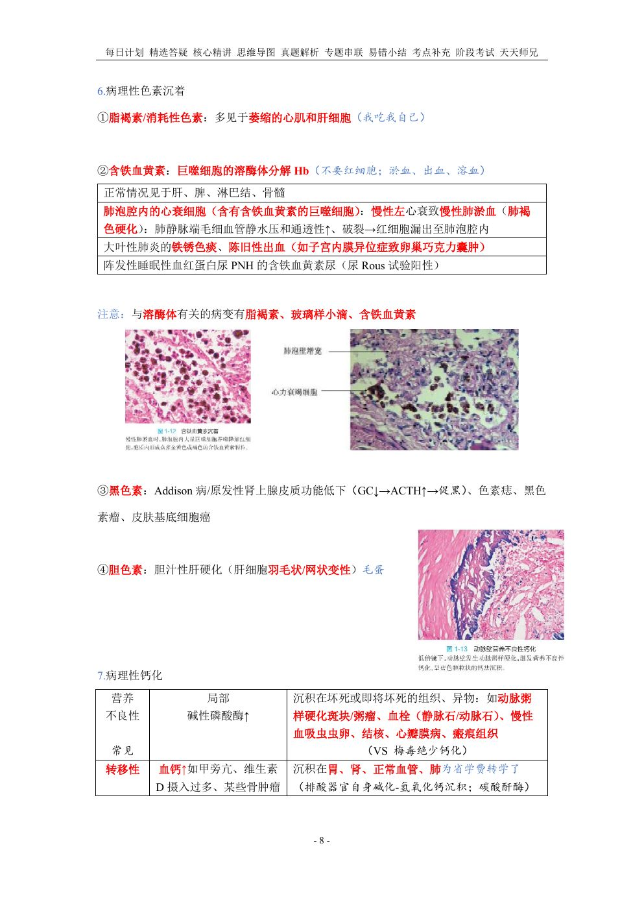
📷 讲义原图 · 第23讲 · 第8页
网站题W19第23讲 · 第8页
转移性钙化
答案与出处
变性和沉积的分布部位B型题
A 水样变性
B 脂肪变性
C 玻璃样/透明变性
D 淀粉样变性
E 黏液样变性
F 病理性色素沉着
G 病理性钙化
网站题W20第23讲 · 第9页
细胞内
答案与出处
答案：AB
📖 第23讲 · 第9页
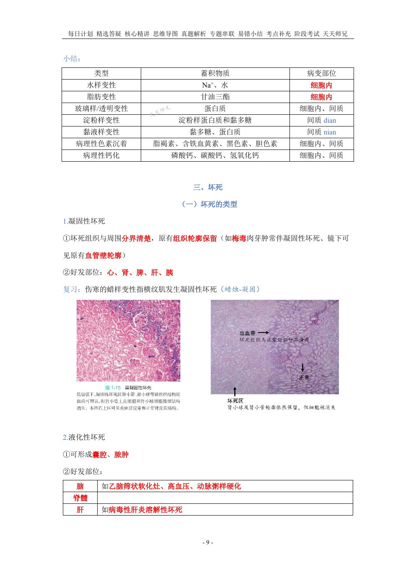
📷 讲义原图 · 第23讲 · 第9页
网站题W21第23讲 · 第9页
细胞内、间质
答案与出处
网站题W22第23讲 · 第9页
间质
答案与出处
常见变性和沉积物的成分B型题
A Na
B 胆色素
C 水
D 含铁血黄素
E 甘油三酯
F 碳酸钙
G 蛋白质
H 黑色素
I 淀粉样蛋白质
J 氢氧化钙
K 黏多糖
L 脂褐素
M 磷酸钙
网站题W23第23讲 · 第9页
水样变性
答案与出处
网站题W24第23讲 · 第9页
脂肪变性
答案与出处
网站题W25第23讲 · 第9页
玻璃样/透明变性
答案与出处
网站题W26第23讲 · 第9页
淀粉样变性
答案与出处
网站题W27第23讲 · 第9页
黏液样变性
答案与出处
网站题W28第23讲 · 第9页
病理性色素沉着
答案与出处
网站题W29第23讲 · 第9页
病理性钙化
答案与出处
坏死的类型与特征B型题
A 坏死组织与周围分界清楚，原有组织轮廓保留
B 可形成囊腔、脓肿
C 好发部位：心、肾、脾、肝、胰
D 好发部位：脑、脊髓、肝
E 彻底的凝固性坏死
F 伤寒的蜡样变性
G 胃溃疡
H 结缔组织、小血管壁的胶原纤维坏死
I 重症急性肾炎
J 多见于结核
K 特殊的液化性坏死
L 结节性多动脉炎
M 胰腺本身的坏死
N 风湿
O 乙脑筛状软化灶
P 坏死灶含脂质较多，呈干燥、淡黄、细腻、质实、无结构的嗜酸性红染颗粒状物质
Q 类风湿
R 高血压脑软化
S 急性重型胰腺炎（钙皂）
T 新月体性肾炎
U 超急性排斥反应
V 动脉粥样硬化累及脑动脉
W 女性乳房创伤
X 1型糖尿病
Y 急进型高血压
Z 慢性肺心病（肺动脉高压）
① SLE
② 大片组织坏死后继发腐败菌感染
③ SARS/MERS/COVID-19
④ 发生在与外界直接或间接相通的器官
⑤ 病毒性肝炎溶解性坏死
⑥ 梅毒肉芽肿
网站题W30第23讲 · 第9页
凝固性坏死
答案与出处
网站题W31第23讲 · 第9页
液化性坏死
答案与出处
网站题W32第23讲 · 第10页
干酪样坏死
答案与出处
答案：EJP
📖 第23讲 · 第10页
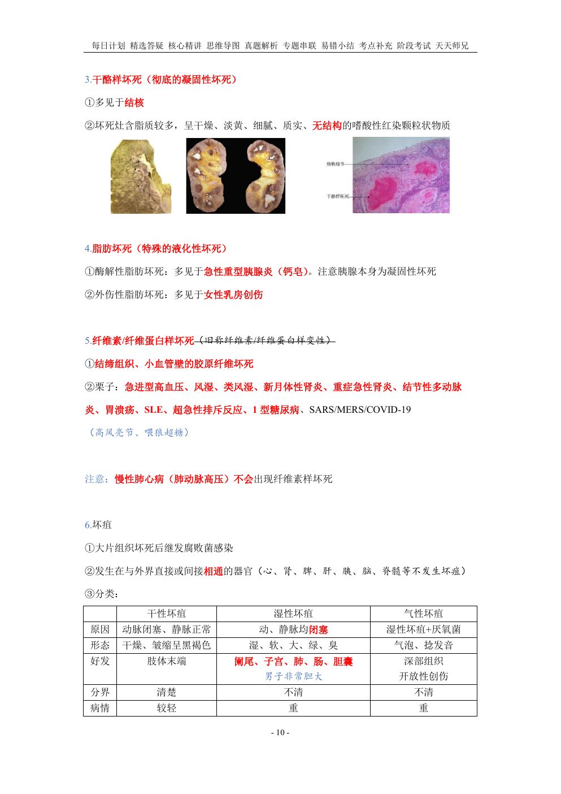
📷 讲义原图 · 第23讲 · 第10页
网站题W33第23讲 · 第10页
脂肪坏死（特殊的液化性坏死）
答案与出处
网站题W34第23讲 · 第10页
纤维素/纤维蛋白样坏死（旧称纤维素/纤维蛋白样变性）
答案与出处
答案：GHILNQTUXY①③
📖 第23讲 · 第10页
网站题W35第23讲 · 第10页
坏疽
答案与出处
干性坏疽B型题
A 动脉闭塞、静脉正常
B 湿、软、大、绿、臭
C 好发深部组织开放性创伤
D 分界清楚
E 病情重
F 动、静脉均闭塞
G 湿性坏疽+厌氧菌
H 干燥、皱缩呈黑褐色
I 气泡、捻发音
J 好发肢体末端
K 好发阑尾、子宫、肺、肠、胆囊
L 分界不清
M 病情较轻
网站题W36第23讲 · 第10页
干性坏疽
答案与出处
网站题W37第23讲 · 第10页
湿性坏疽
答案与出处
网站题W38第23讲 · 第10页
气性坏疽
答案与出处
凝固性坏死B型题
A 心
B 脑
C 肾
D 阑尾
E 胰（脂肪）
F 肝
G 子宫
H 乳房
I 肺
J 肠
K 胆囊
L 脾
M 肢体末端
N 脊髓
O 胰（实质）
网站题W39第23讲 · 第9页
凝固性坏死
答案与出处
网站题W40第23讲 · 第9页
液化性坏死
答案与出处
网站题W41第23讲 · 第11页
湿性坏疽
答案与出处
答案：DGIJK
📖 第23讲 · 第11页
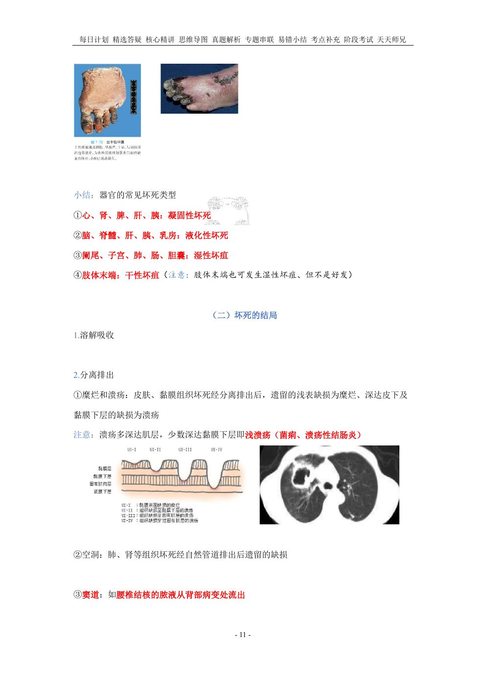
📷 讲义原图 · 第23讲 · 第11页
网站题W42第23讲 · 第11页
干性坏疽
答案与出处
溃疡B型题
A 皮肤、黏膜组织坏死经分离排出后，遗留的浅表缺损
B 肺、肾等组织坏死经自然管道排出后遗留的缺损
C 皮肤、黏膜组织坏死经分离排出后深达皮下及黏膜下层的缺损
D 腰椎结核的脓液从背部病变处流出
E 阑尾切除术后切口处有肠内容物流出
网站题W43第23讲 · 第11页
溃疡
答案与出处
网站题W44第23讲 · 第11页
糜烂
答案与出处
网站题W45第23讲 · 第11页
空洞
答案与出处
网站题W46第23讲 · 第11页
窦道
答案与出处
网站题W47第23讲 · 第12页
瘘管
答案与出处
答案：E
📖 第23讲 · 第12页
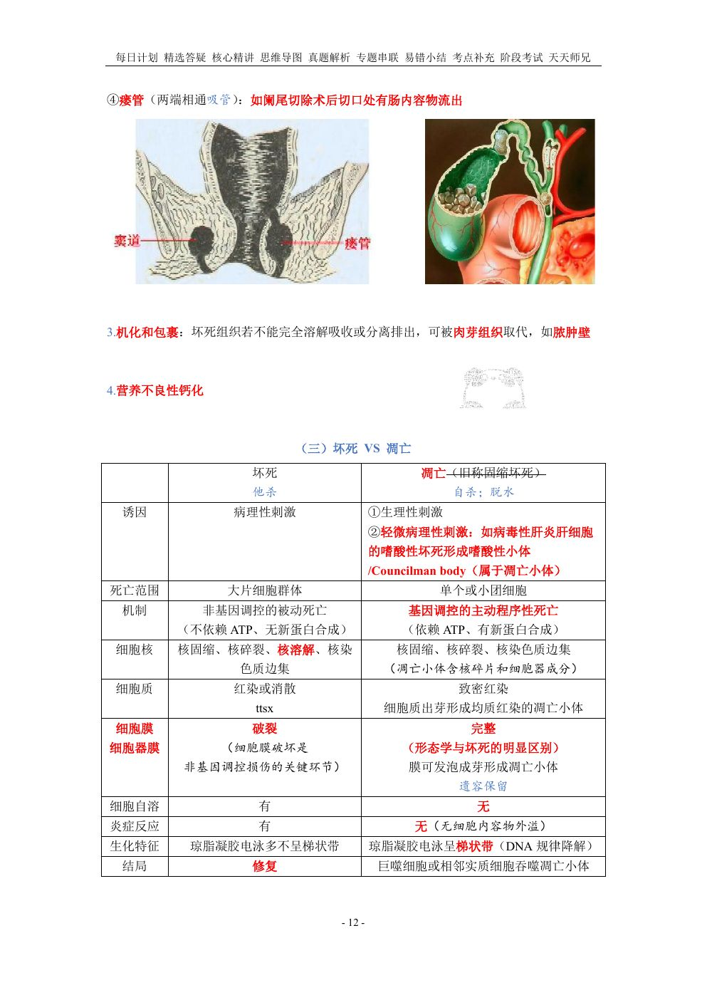
📷 讲义原图 · 第23讲 · 第12页
坏死与凋亡B型题
A 诱因病理性刺激
B 死亡范围为单个或小团细胞
C 核固缩、核碎裂、核溶解、核染色质边集
D 细胞质致密红染
E 细胞质出芽形成均质红染的凋亡小体
F 细胞膜和细胞器膜破裂
G 有细胞自溶
H 无炎症反应
I 生化特征为琼脂凝胶电泳多不呈梯状带
J 生化特征为琼脂凝胶电泳呈梯状带（DNA规律降解）
K 结局修复
L 诱因生理性刺激
M 死亡范围大片细胞群体
N 轻微病理性刺激：如病毒性肝炎肝细胞的嗜酸性坏死形成嗜酸性小体
O 非基因调控的被动死亡
P 基因调控的主动程序性死亡
Q 核固缩、核碎裂、核染色质边集（凋亡小体含核碎片和细胞器成分）
R 细胞质红染或消散
S 细胞膜和细胞器膜完整
T 膜可发泡成芽形成凋亡小体
U 无细胞自溶
V 有炎症反应
W 结局为巨噬细胞或相邻实质细胞吞噬凋亡小体
X 依赖ATP，有新蛋白合成
Y 不依赖ATP，无新蛋白合成
网站题W48第23讲 · 第12页
坏死
答案与出处
答案：ACFGIKMORVY
📖 第23讲 · 第12页
网站题W49第23讲 · 第12页
凋亡
答案与出处
答案：BDEHJLNPQSTUWX
📖 第23讲 · 第12页
慢性胃炎时胃黏膜的萎缩属于单项选择教师补充
A 营养不良性萎缩
B 失用性萎缩
C 损伤性萎缩
D 压迫性萎缩
网站题W50第23讲 · 第2页
慢性胃炎时胃黏膜的萎缩属于(单选)
答案与出处
细胞损伤最常见和最重要的中心环节是单项选择教师补充
A 缺血缺氧
B 化学性损伤
C 线粒体损伤
D 细胞膜损伤
网站题W51第23讲 · 第5页
细胞损伤最常见和最重要的中心环节是(单选)
答案与出处
答案：A
📖 第23讲 · 第5页
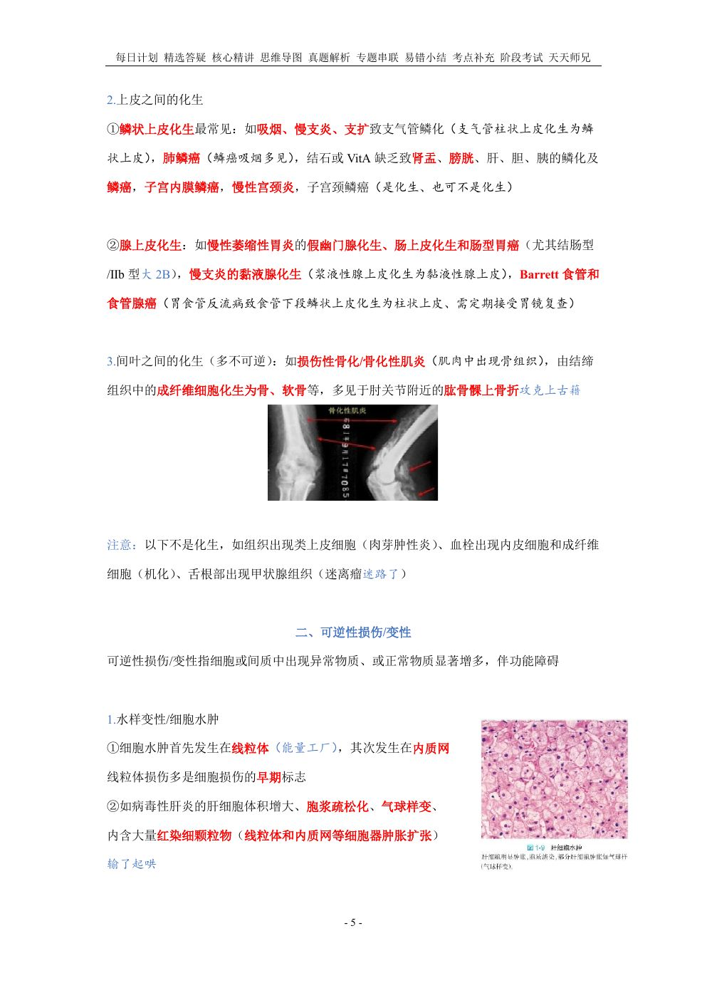
📷 讲义原图 · 第23讲 · 第5页
容易发生液化性坏死的病变有多项选择教师补充
网站题W52第23讲 · 第16页
容易发生液化性坏死的病变有(多选)
答案与出处
答案：ABD
📖 第23讲 · 第16页
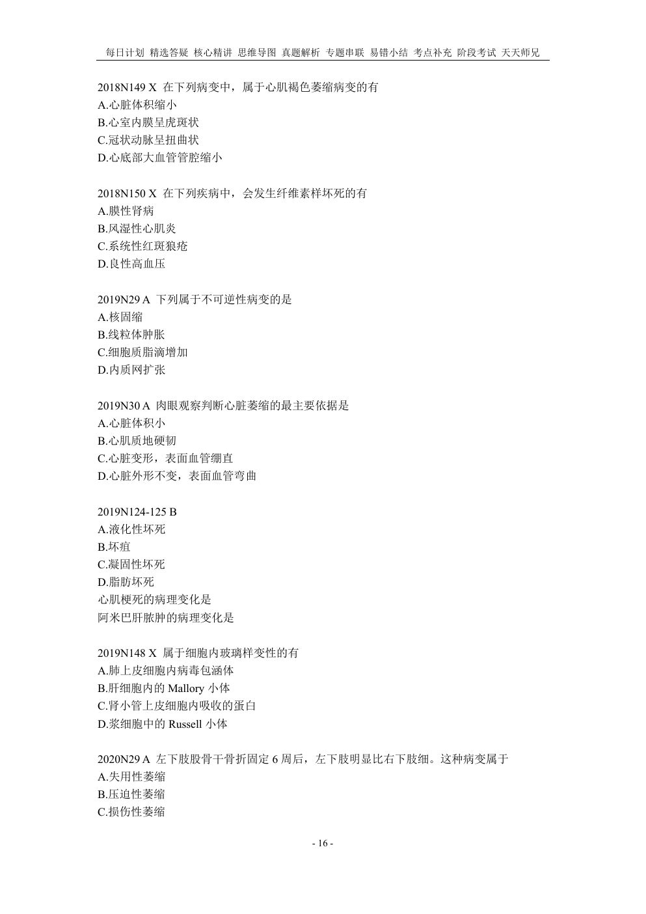
📷 讲义原图 · 第23讲 · 第16页
与肝细胞脂肪变性有关的因素有多项选择教师补充
网站题W53第23讲 · 第2页
与肝细胞脂肪变性有关的因素有(多选)
答案与出处
缺碘引起的甲状腺肿大属于单项选择教师补充
A 代偿性肥大
B 代偿性增生
C 内分泌性肥大
D 病理性增生
网站题W54第23讲 · 第4页
缺碘引起的甲状腺肿大属于(单选)
答案与出处
玻璃样变性常发生在多项选择教师补充
A 硅结节
B 浆细胞胞质
C 结核结节
D 纤维结缔组织
网站题W55第23讲 · 第7页
玻璃样变性常发生在(多选)
答案与出处
答案：ABD
📖 第23讲 · 第7页
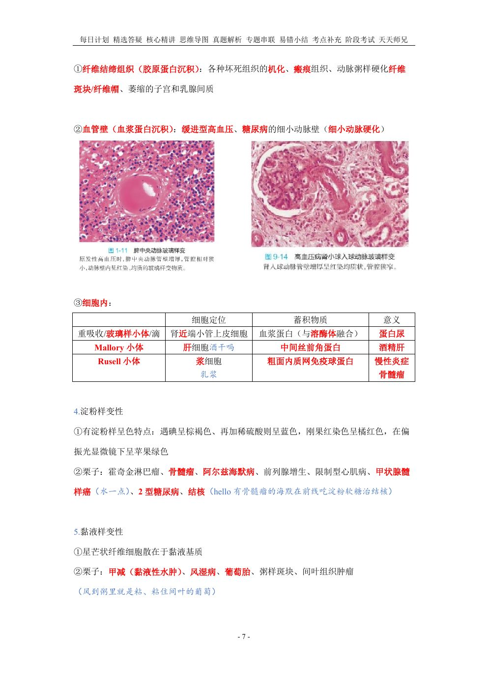
📷 讲义原图 · 第23讲 · 第7页
以下关于纤维素样坏死的描述,正确的有多项选择教师补充
A 是结缔组织常见的坏死形式
B 以大量纤维素渗出为基础
C 常见于变态反应性疾病
D 形成颗粒状无结构物质
网站题W56第23讲 · 第15页
以下关于纤维素样坏死的描述,正确的有(多选)
答案与出处
答案：ACD
📖 第23讲 · 第15页
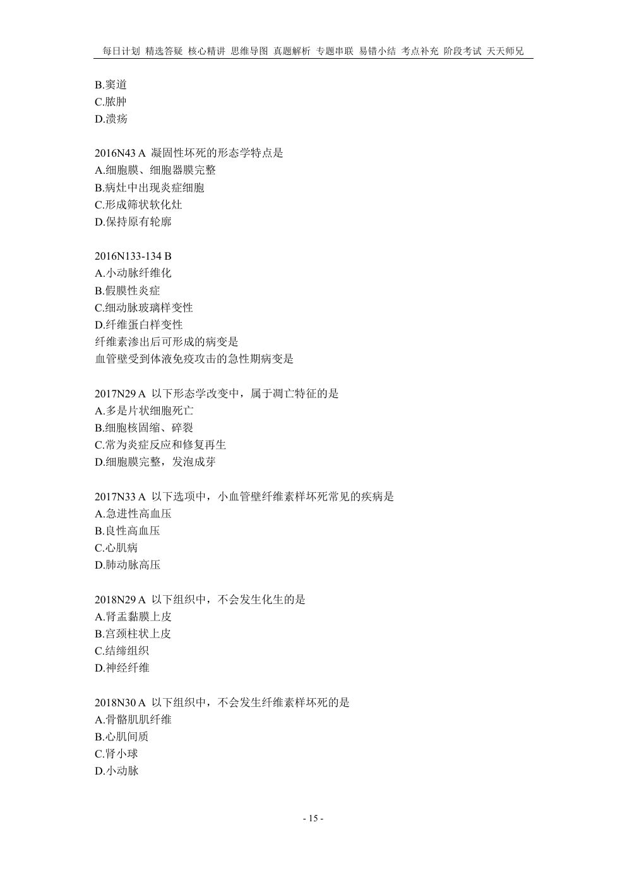
📷 讲义原图 · 第23讲 · 第15页
以下易发生凝固性坏死的是多项选择教师补充
网站题W57第23讲 · 第9页
以下易发生凝固性坏死的是(多选)
答案与出处
显示含铁血黄素的特异染色方法是单项选择教师补充
A HE染色
B 苏丹III染色
C 刚果红染色
D 普鲁士蓝染色
网站题W58第23讲 · 第8页
显示含铁血黄素的特异染色方法是(单选)
答案与出处
以下关于凋亡的叙述,正确的有多项选择教师补充
A 与焦亡、自噬均属于调节性死亡
B 凋亡细胞固缩,核染色质边集
C 凋亡细胞周围可有巨噬细胞存在
D 是耗能的主动过程,有新蛋白合成
网站题W59第23讲 · 第12页
以下关于凋亡的叙述,正确的有(多选)
答案与出处
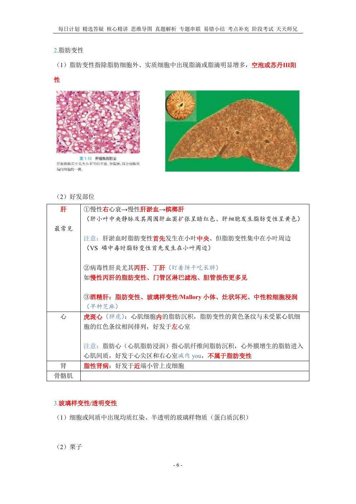
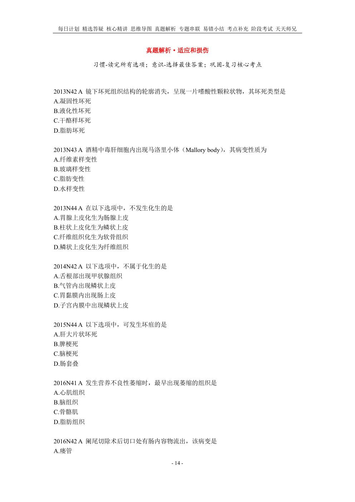
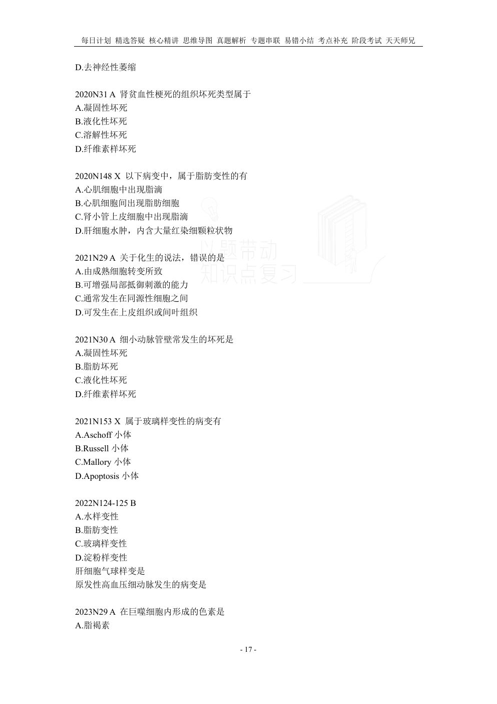
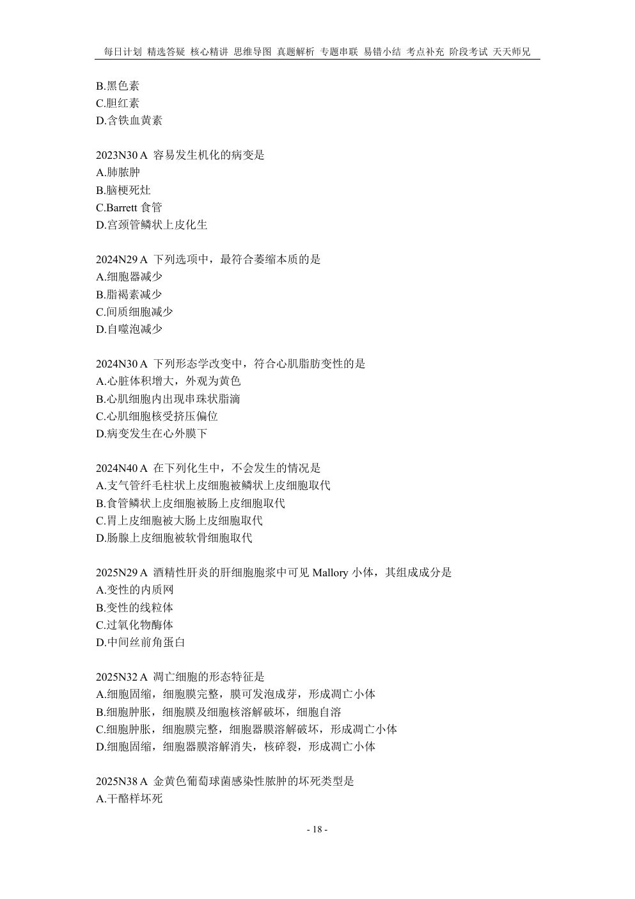
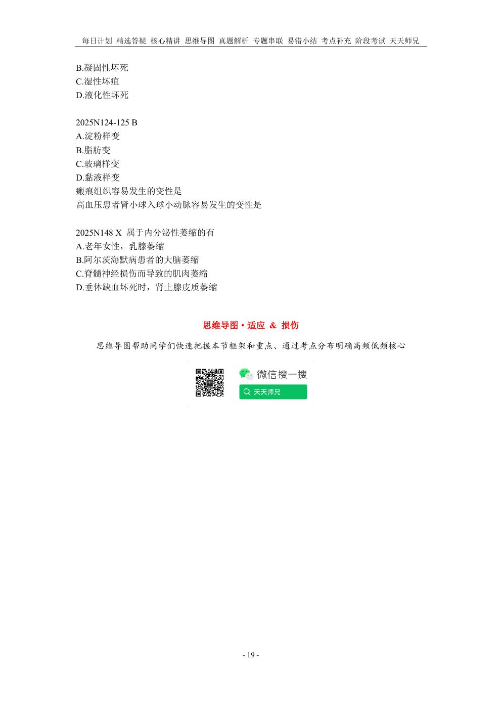